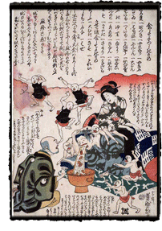
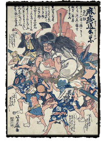
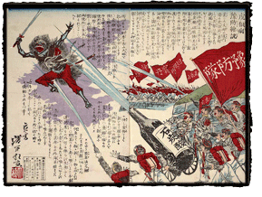
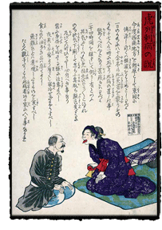

|
Contagious Disease
Page 3 of 3
Another image, by the artist Yoshimori, reveals a certain tension between traditional practices and attitudes toward modern medicine. The print shows a man vomiting coins into a metal bowl, as his daughter and a doctor attend him. In a lengthy inscription, the man complains that his "purse is constantly drained for medicine and doctor's fees. I threw up money again. If I vomit nothing but money, can I recover from measles today?" The doctor agrees that if the medicine is taken faithfully he will recover, and that after all, "medicine's effect depends on money." As the man vomits, a crew of tiny figures — the "good foods," their facial features rendered as characters for daikon or yakifu (wheat gluten) — clamber over the body and seem to remonstrate with the doctor. Measles — personified as tiny figures wearing black aprons, their features made up of the characters ハシカ, or hashika — gesture impotently above. At the top of the print are listed the good foods, as well as other helpful comments and diagnostic tips. The notion that certain foods could be beneficial in surviving the disease runs through many of the hashika-e. Perhaps the most direct evocation of this idea is a charming print by Yoshifuji that portrays the measles god as Shūtendōji, an ogre famed for his physical strength. In this scene, the strong man, covered with rashes and with a mane of wild black hair, is carried aloft on a straw pallet by a crew of "foods" — an orange, wheat gluten or tofu, along with labeled food containers and packages serving as "heads" atop human bodies. The scene is meant to connote a Shinto festival, in which the kami (spirits) are paraded through the streets on portable carts (mikoshi) so that community members may worship them and receive blessings. Furthering the connection are the stack of round kagami mochi (rice cakes) and gohei (paper pendants) flanking the ogre, both Shinto emblems that mark him as a god propitiated by offerings. In the foreground of the print stands a doctor, his head a container marked "drugs," a fan decorated with two coins in his hand. In the adjacent text, he exhorts the foods to carry off the disease. As in the previous example, there is the sense that money, drugs, and doctors are useless at best without proper attention to diet. However, here the connection between the foods' properties — their intrinsic purity or impurity — and Shinto belief is made explicit. CholeraCholera is thought to have first entered Japan in 1822, by foreign ships entering through the port of Nagasaki. The first epidemic was limited to western Japan, but in 1858, four years after Commodore Matthew Perry forced the Japanese government to open additional ports to Western trade, a second, more widespread epidemic spread as far east as Edo. The disease struck again and again in the decades to follow. The disease was known as korori (sudden death) or mikka korori (three-day death): causing severe diarrhea and dehydration, cholera quickly killed its victims.
An 1886 print in the collection depicts a lunging tiger that knocks a man off his sickbed, as his enormously engorged scrotum sweeps down to clobber three unwitting caregivers. At left, soldiers spray the tiger with a large bottle, mounted like a cannon on a wheeled cart. The liquid is carbolic acid, or phenol, which was a disinfectant considered effective in warding off the disease. In a print from 1877, this fluid is unleashed upon a sword-wielding demon by the "prevention squad," a crowd of soldiers in Western-style uniforms. An American doctor, D.B. Simmons, promoted the use of carbolic acid in Japan. Working at Juzen Hospital in Yokohama, Simmons began the practice of disinfecting patients with carbolic acid and quarantining them to slow the spread of the disease. It seems likely that Simmons is the balding Western man shown inspecting the outstretched tongue of a Japanese woman in an 1877 print titled "The Story of Cholera." The text above the figures describes the rapid spread of the disease, its often fatal effects, and some recommendations for patient care.
|
|||